The animation panel and exploded views (study 0305)
Point E (realistic exploded views, owner 23 Nov 20:41): a first try finds each part's free way out from the CAD shapes – on the spindle unit every part leaves through the housing's open end in 5 rounds, every bolt head first – and does it for a 2,992-part machine in 9 s. What it cannot do alone: parts that only come out together (a cylinder's rod in its barrel), and a machine inside an enclosure (nothing has a way out until the enclosure goes). Section 2 and tasks I–L.
1 · Used as a new user (measured)
Real Blender 5.2.3 with the installed app 0.2.214, web machine (4 cores, no graphics card), screen 1600 px wide, the side
panel at Blender's default width (292 px), UI scale 1.0. Test models test_crane_a, test_gantry,
test_sequence. What 4 Motion must give first (joints, the CNC machine) was set up as the lessons and the PC check do; every
action after that was done the way its button does it and written down (ledger_*.json next to this page). Not simulated mouse
clicks: a "menu" is counted as 2 clicks (open, pick), a field as 1 typed value.
| Walk | Actions | Typed | Section changes | Clicks in the view | Scroll to Render | Video |
|---|---|---|---|---|---|---|
| Crane lift: boom up, trolley out, camera rides on the trolley | 22 | 6 | 1 | 1 | yes: ~1,250 px down | 7.0 s |
| Mill program video: G-code step, camera keeps the tool in the middle | 22 | 2 | 3 | 1 | yes: ~1,540 px down while the G-code step is open | 19.1 s |
| Product: one-click product video | 3 | 0 | 1 | 0 | – | 55 s (20 s cannot be asked) |
| Product: Explode → pose → orbit, Go to pose, hold, Back to CAD | 25 | 7 | 2 | 1 | – | 21.0 s |
| Product: orbit + Assembly sequence take apart, hold, put together | 18 | 5 | 0 | 1 | – | 21.0 s |
Build & play took 0.0–0.1 s on all three sets (small models). "Scroll to Render": where the Render animation button lies below the top of the side panel with only 6 Animation open; task 0200 measured a visible side panel of about 1,000 px on a 1920 × 1200 screen.
What the user had to know that no panel says
- Steps that play together need the same Start, typed. A new step starts when the last one ends. The riding camera (crane), the camera on the tool (mill) and the turn around the model (product) all had their Start typed back to 0 – the only clue is the list's title "Steps (overlaps play together)".
- A length copied by hand. To follow the tool for the whole program the user reads the G-code step's 18.1 s off its row and types it into the camera step. There is no "as long as the step above" or "the whole animation"; when the program changes, the camera stops early.
- The "hold" is invisible. Exploded – hold 5 s – back is two steps whose times the user works out (pose ends at 7 s, Back to CAD starts at 12 s). Nothing shows the gap.
- A new Move joint step takes the joint selected in 4 Motion, not the one the user means: the crane's first step came with the trolley and was changed in its search list.
- Explode cannot be tried again. A second Explode moves the pieces further from where they now are (it explodes the exploded state). To try another distance the user must find Everything back to CAD position, which sits in 4 Motion's main panel, above the fold, and press Explode again.
- "Outwards" barely explodes a stack. The spindle unit's pieces sit on one axis, so moving them away from the centre gives a short, overlapping spread (picture below) – the user would want "along the shaft".
- Three homes for an exploded view. The panel says "+ above saves it as a pose"; the crane lesson saves its exploded view as a saved scene; the Assembly sequence step has its own exploded places and its own direction, distance and order. Go to pose moves all pieces at once; for one-after-another the user needs the other step kind – and its Put together step must be told the subassembly, direction and order again.
- Which part is T1 is said in 4 Motion > CNC machine, not in the G-code step that asks for it ("T2 (line 12) is not in the tool list"): the user leaves 6 Animation and comes back (3 section changes).
- Render animation is at the bottom, below the Video box; with a step open it is 1.2–1.6 screens down. Build & play is at the top left since 0278, so the two main buttons of the same job are far apart.
- Trail lines need an animation. They are drawn at Build along a part's motion; a still exploded picture cannot show where the parts came from.
- The product video's shortest length is "About 30 s"; asked "About 60 s" it made 55 s (4 steps). A 20 s video means shortening its steps by hand.
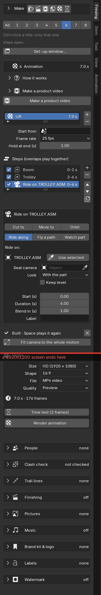
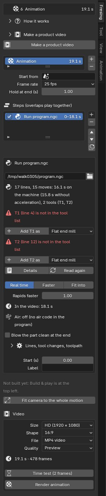
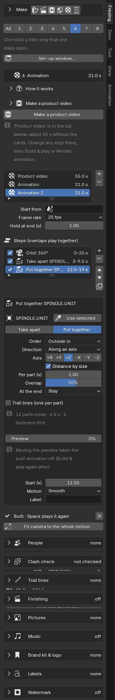
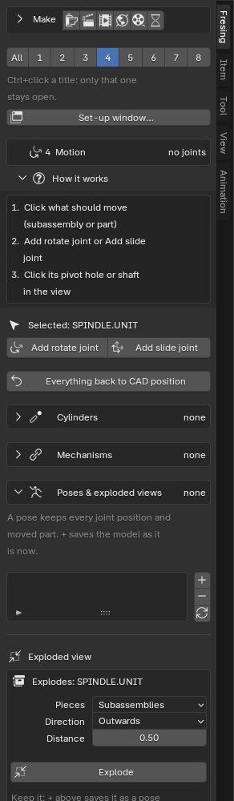
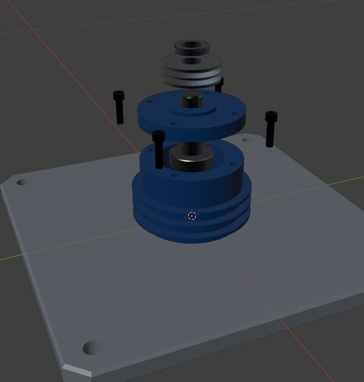
2 · Realistic exploded views: each part's own way out (point E)
Measured with a prototype (tasks/0305_proto/freeways.py, Blender 5.2.3 as a Python module, web machine, one core):
for every part, which ways out are free while the others stand – both ends of its own round axis (read by the importer, its largest radius
first), then the six world axes – tested with the Assembly sequence's own rays (48 points per part, 0.1 mm inside it) against the parts whose
box the part sweeps. Then the parts are taken out in rounds: in each round every part with a free way leaves (screws and nuts in a
round of their own first); the biggest part stays. Numbers: freeways.json.
| Model | Parts | Triangles | Time | Rounds | Stuck | Screws with a head found / left head first | Stays |
|---|---|---|---|---|---|---|---|
| Spindle unit (test_sequence) | 13 | 7,178 | 0.02 s | 5 | 0 | 4 / 4 (the locknut has no head: off its thread) | base plate |
| Frame (test_sequence_frame) | 9 | 1,284 | 0.02 s | 2 | 0 | 2 / 2 | base plate |
| Crane (test_crane_a) | 20 | 7,046 | 0.04 s | 4 | 2 | 8 / 8 | base |
| Tool changer (test_atc) | 100 | 34,623 | 0.16 s | 5 | 3 | 4 / 4 | bed |
| Mill in its enclosure (test_mill_cabinet) | 51 | 9,755 | 0.11 s | 8 | 25 | 4 / – (inside, stuck) | enclosure |
| PC check's invented machine (Heavy) | 2,992 | 3,782,496 | 16.9 s (ways 7.7 + rounds 9.1) | 4 | 100 | 968 plain cylinders, no heads | a housing |
The 2,992 parts needed 15,724 ray tests; 78 million box checks (NumPy) threw out every other pair. On a 24-core PC the rounds could run in helper processes like the STEP reader; an expectation, not measured.
What it shows
- Along its own axis works. Spindle unit: bolts and the locknut first (round 1), then pulley, cover with shaft, the upper bearing, the spacer with the lower bearing – all through the open end of the housing (+Z), none sideways. Without "the biggest part stays" the housing slid off downwards in round 1 and the bearings then left sideways: a realistic view needs one part that stays.
- Bolts head first. The head is the end of the round axis whose points lie furthest from the axis: found on 22 of the 24 fasteners of the five small models (the 2 others are the locknut and a split pin – no head of that kind, correct), and every one that left went head first (18 of 18; the mill's 4 sit inside the closed enclosure). The pitch comes from the name: M8 = 1.25 mm a turn (ISO coarse; "M12 x 1.5" names its own), so the bolt of the unit turns about 9 times over its 12 mm of thread – show 3 turns, then the straight move. The fastener names are read already (task 0030); the pitch table is new.
- Parts that only come out together. The crane's cylinder rod sits in its barrel: neither has a way out alone (the rod's piston is inside the barrel). Such a "stuck" pair leaves as one piece, or the user says "leaves together with".
- An enclosure blocks everything. With the mill's enclosure as the part that stays, 25 of 51 parts are stuck: nothing inside can leave through a closed cabinet. Here the right view is a service view (only the parts of one job come out, the doors open or the cabinet hidden), or the bed stays instead of the cabinet.
- Overlapping parts. The invented Heavy machine has parts placed through each other (made for load, not for fit): 100 stuck. Real CAD rarely has that, but a part pressed a few tenths into another (an interference fit drawn as overlap) will be stuck too – the app must say which part blocks which, not just fail.
- Not tested yet: a part that must turn or move in two steps to come out (a bayonet, a circlip groove, a part behind a lip), parts snapped over each other, and a long thin part threaded through a hole at an angle. The rays test straight moves only.
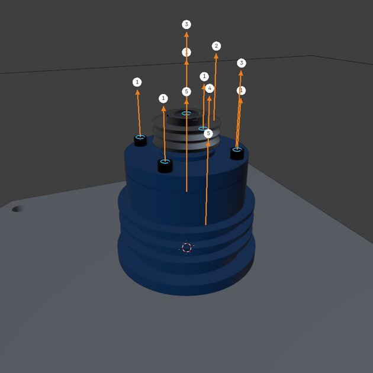
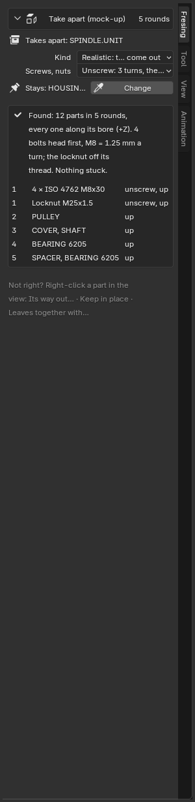
Kinds of exploded view to offer
| Kind | What it is for |
|---|---|
| Realistic take-apart | a service or assembly film: each part the way it really comes out, screws unscrewed, in the order nothing blocks |
| Straight along one axis | today's Take apart: quick and tidy for a stack (a spindle, a gearbox on its shaft) |
| Spread for a picture | a catalogue or offer picture: outwards with even gaps, every part visible at once, no order |
| By assembly level | a big machine: whole subassemblies move away first, then each one comes apart on its own |
| Service view | a manual: only the parts of one job come out (filter, belt, spindle); the rest stays, a cabinet opens or hides |
3 · What users know from other programs
From the programs' own help pages (search results only – the help sites could not be opened from the web machine) and general knowledge; "(memory)" = not checked at a source.
| Program | Ideas that make it easy | What confuses people |
|---|---|---|
| KeyShot | Animation Wizard in 3 steps; every animation is a bar on a timeline (part bars green), drag to move; Translation / Rotation / Fade; right-click a bar → Mirror to put an explode back together | one bar per part per move: hundreds of bars on a big assembly; an "explode" is a script, not built in |
| Inventor Presentations | Auto Explode with one distance, then tweak single parts; tweaks are actions on a storyboard; trail lines on each tweak, hide one; snapshot views → drawing view with balloons and parts list | snapshots linked to a storyboard ("Update" icon); many small actions |
| SolidWorks Composer | keyframe timeline; explode lines from neutral to exploded place; callouts that show the BOM number, a BOM table of the parts with callouts, callouts snap to tidy lines; linear / spherical / cylindrical explode (memory) | many workshops and keyframes; Digger and callout settings |
| Fusion (Animation) | Auto Explode: One Level / All Levels; a copy of a storyboard reversed = the assembly; drawing from the animation | "home" position and storyboard reset are easy to lose |
| SolidWorks exploded views | auto-space a row of parts evenly as you drag; radial explode round an axis; smart explode lines drawn by themselves | regular, radial and chain steps are three kinds of step |
| Onshape | explode steps you can reorder; a rollback bar shows the model after each step; type a distance or drag the triad | – |
| Blender's own timeline | scrub the frame; keys you can drag | timeline, dope sheet, graph editor, NLA, key types: no idea of a "step" |
What fits "as simple as possible": steps as bars on one time line (not keys, not one bar per part); "start with the one above"; explode in one move with one distance, by level, from the CAD places, put back by mirroring; trail lines by themselves; numbers and a parts list from the exploded view. Not: keyframes, per-part bars, storyboards linked to snapshots.
4 · Mock-ups (drawn in the app with its own panel code; the buttons do nothing)
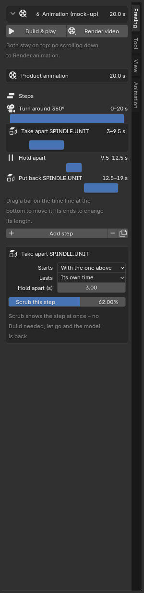
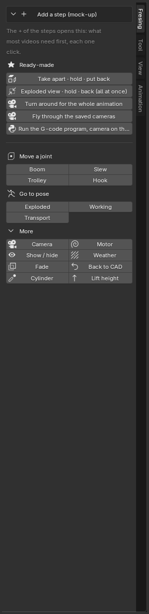
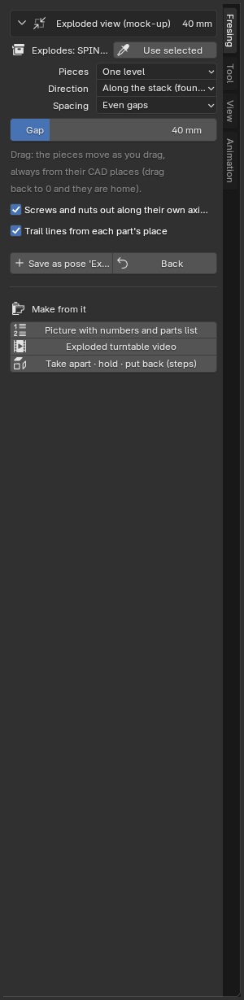
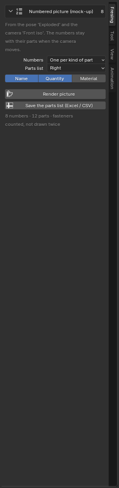
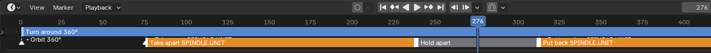
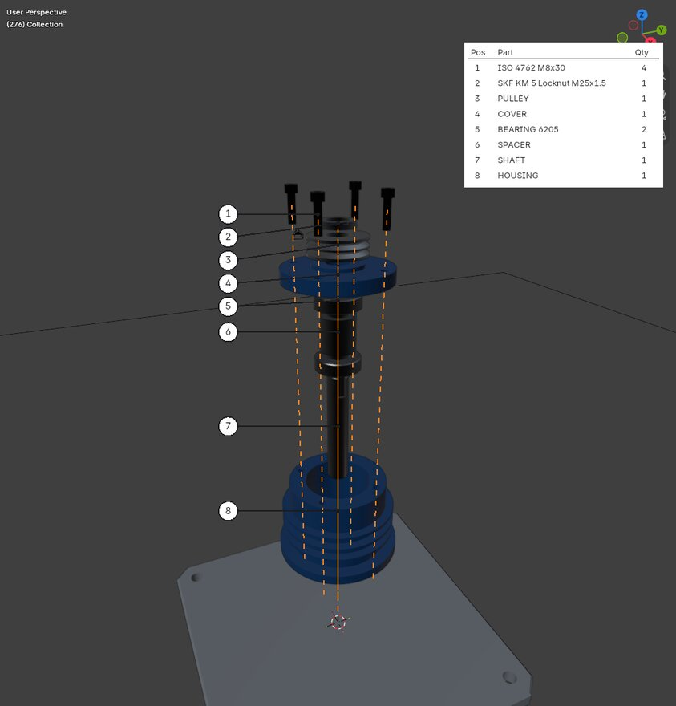
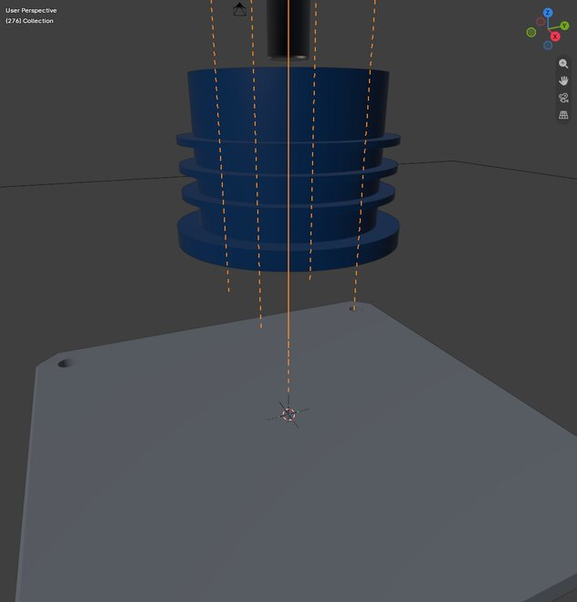
5 · Build tasks – tick what to build
Gain = the three walks again with the change (an expectation, counted from the mock-ups, not measured). Work: S ≈ half a day of a worker chat, M ≈ a day, L ≈ two or more. All in the Motion lane (6 Animation, poses, sequence) except F (Scene & Render lane: labels).
Steps that start together and last the whole animation work S–M · Opus · Medium · first
Each step gets Starts: after the one above (as today) / with the one above / at a time, and Lasts: its own time / the whole animation / as long as the one above. Times follow by themselves when a step changes (the camera keeps riding when the program gets longer). Build & play and Render video on top of 6 Animation (Video settings fold under it). A new Move joint step takes the first joint no step moves yet. Old projects: every step "at a time", nothing moves.
Gain: typed numbers crane 6 → 4, mill 2 → 0, product 7 → 2; no scrolling to Render (was 1,250–1,540 px down).
Ready-made steps in the + work M · Opus · Medium · after A
The + of the steps opens a small panel: Take apart · hold · put back (one step with a Hold, the same subassembly and settings both ways), Exploded view · hold · back (a pose), Turn around for the whole animation, Fly through the saved cameras, Run the G-code program with the camera on the tool; then the model's joints and poses as buttons (no search list).
Gain: actions crane 22 → ~19, mill 22 → ~11, product (sequence) 18 → ~10. The mill also needs H's "click T1 here".
Exploded view, round 2 work M–L · Opus · High
One Gap slider that moves the pieces while dragging, always from their CAD places (no "explode the exploded"), Back beside it, Save as pose in one click. Pieces: one level / every part. Direction: along the stack (pieces on one axis leave along it – found from their round faces, as joints are – the others outwards), outwards, along X / Y / Z, along a part's axis (click a round face), around an axis (radial). Spacing: even gaps / by size. Screws and nuts out along their own axis first (the sequence already knows fasteners). One exploded state: an Assembly sequence step can take apart to a pose, so "all at once" and "one after another" end in the same picture; the lesson and the panel both save a pose.
Gain: product (pose) 25 → ~11 actions with B; the stack explodes along its shaft instead of the short spread above.
Steps as bars on the time line work L · Opus · High · after A
Blender's time line at the bottom shows one bar per step (colour by kind, a camera lane and a model lane); drag a bar to move it, its ends to change its length, click it to select the step in the list; holds show as grey gaps. A drag takes the built animation off and builds again when it is cheap (Build took 0.0–0.1 s on the test sets; big models: measured in the task).
Gain: the whole video at a glance – the snag behind items 1–3 above. Risk: a modal drag in Blender's time line needs care (undo, Client view lock).
Scrub one step without Build work M · Opus · Medium
The Assembly sequence step's Preview slider for every step kind ("Scrub this step"); let go and the model is back. Or, simpler, build by itself after each change while the last Build took under a second, so Blender's own time line scrubs.
Gain: medium – Build is already fast on small models; worth it on big ones. Can be folded into D.
Picture with numbers and a parts list work L · Opus · High · Scene & Render lane (labels)
Make > Numbered picture: from a pose (the exploded view) and a saved camera, one number per kind of part (or per part) with a leader line, placed by the labels' own box placing (task 0025), and a parts list (Pos, Name, Qty, Material) right or below; the list also saved as an Excel / CSV file. The numbers stay with their parts when the camera moves.
Gain: manuals, spare-part sheets and quotes straight from the render; no other step of the app gives this today.
Trail lines on a still exploded view, exploded turntable work M · Opus · Medium · after C
A tick in Exploded view: dashed lines from each piece's CAD place to its exploded place, in pictures and videos (today trail lines only follow an animation). "Exploded turntable video" makes the turntable with the pose on.
Gain: the classic exploded-drawing look; small once C exists.
Small fixes work S · Sonnet · Medium · any time
Product video "About 20 s"; the G-code step asks "Which part is T1? Click it" itself (no trip to 4 Motion); "Start from" says "Start scene" and offers the saved scene the user just made; the explode hint and the crane lesson agree (pose).
Gain: the mill walk's 3 section changes → 1.
Realistic take-apart: each part's own way out and the order work L · Opus · High · Motion lane (sequence.py, core/sequence.py) · after C
A new kind in the Assembly sequence step. Each part's free ways from the shapes (its round axis first, then the axes), the part that stays (the biggest, or one the user clicks), the order in rounds from what blocks what (screws and nuts first, then what they held, inner parts out through the free opening), per subassembly and between subassemblies. Parts that are stuck alone but free together leave as one piece; the step says which part blocks which. In helper processes for big models.
Measured with the prototype: right on the spindle unit, frame, crane bolts, tool changer; 2,992 parts in 17 s on one core. Gain: the owner's "parts come out the way they really do".
Screws and nuts unscrew work M · Opus · Medium · Motion lane · with or after I
Bolts, screws, studs and nuts turn about their own axis while they move out by the pitch (ISO coarse from the size, a fine pitch when the name gives one), head first; a nut off its thread first, then its washer. Choice: 3 turns then straight out (default) / all the way / straight out. Put together = the same backwards (screwed in).
Head found on every screw of the test models; the turning is a rotation key per part, cheap.
Kinds of exploded view in one place work M · Opus · Medium · Motion lane · after C and I
One "Kind" choice for both the still exploded view (C) and the take-apart step: realistic, straight along one axis, spread for a picture, by assembly level, service view (pick the parts of the job; the rest stays, a cabinet opens or hides). The table above.
Gain: one way to explode instead of three homes; the service view is what a manual needs.
Correct the app in two clicks work S–M · Sonnet/Opus · Medium · Motion lane + context_menu.py · with I
Right-click a part in the view (the menu of task 0253): Its way out… (the free ways as arrows; click one, or click a round face), Keep in place, Leaves together with… (click the other part). Stored per part in the project, kept by a model update.
Gain: the stuck cylinder and the enclosure cases above, fixed by the user without settings.
Pictures: tasks/0305_page/img; counts: ledger_crane.json, ledger_mill.json, ledger_product.json; the scripts that made them: tasks/0305_proto/ on the branch task/0305-study-animation-exploded.